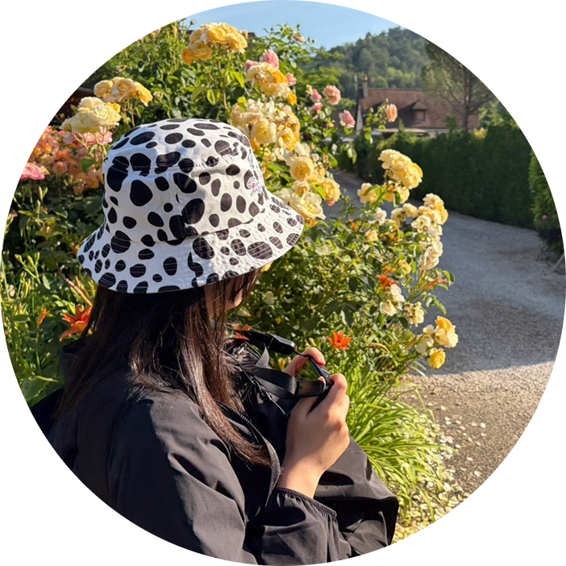

考えることを
楽しみながら
つくっていく
projects 制作物
about me わたしについて

AYANE HARADA
1997年生まれ、大阪府堺市出身。
前職では完全在宅の環境で、採用支援サービスのトークスクリプト作成や納品管理を担当していました。現在は職業訓練校でWebプログラミングを学びながら、Webエンジニアを目指しています。
考えたものを形にし、試行錯誤しながらより良くしていくことが好きです。
また日常の中にある、静かな風景や心に残る色に惹かれます。
現在は特にフロントエンドに興味があり、ユーザーにとって使いやすいWebサービスをつくれるエンジニアを目指しています。